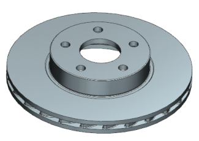

使用 WAVE 的其中一个优势是您不需要在使用子部件时打开父项部件，这在处理大型装配时可以节省计算机资源。
在装配导航器中，关闭铸件。
在部件导航器中，双击链接体 (6)。
注意出现的警报信息。
在 WAVE 几何体链接器对话框的父级信息组中，您可以看到铸件未被加载。
点击取消。
在装配导航器中，打开铸件。
将会重新创建铸件的散热片，因为尚未保存更改。

|
注释 |
如果未加载父项(铸件)，那么子部件(加工件)可能会过时。 |
关闭所有部件。